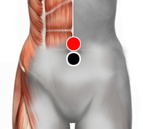

Plaquetas
Pares
ombligo - ombligo
adenoides - adenoides
esternón - suprarrenal
ciatico - dorsal 7

Generalidades:
Las Plaquetas forman parte de la composición de la sangre, su función es ayudar a formar coagulos. El nivel normal de plaquetas está entre 150,000 a 400,000 por microlitro de sangre (mcL). Un exceso de plaquetas crea coagulos o trombos que pueden obstruir el torrente sanguíneo en alguna región del sistema circulatorio, por el contrario la disminución de plaquetas retarda el proceso de coagulación que es necesario en caso de sufrir alguna hemorragia o herida.
El par ombligo - ombligo se combina con esternón - suprarrenal.
El par adenoides-adenoides también puede ser útil en caso de intoxicación.